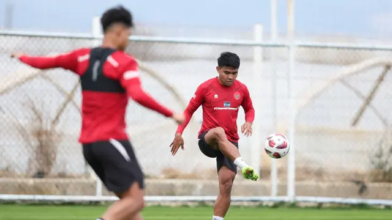

Hari Kedua TC Piala Asia 2023 di Turki, Timnas Indonesia Langsung Geber Latihan dengan Intensitas Tinggi
Tanggal :
23 Des 2023, 16:23 WIB
Jakarta Timnas Indonesia sudah memasuki hari kedua masa di pemusatan latihan (TC) di Antalya, Turki.
Timnas mempersiapkan diri di Turki untuk persiapan Piala Asia 2023 yang berlangsung di Qatar mulai 12
Januari sampai 10 Februari 2024.
Tak tanggung-tanggung, Timnas Indonesia langsung masuk latihan dengan intensitas yang tinggi untuk
persiapan Piala Asia 2023.Pada pagi hari, penggawa Garuda melakukan latihan gym di hotel tempat mereka
menginap. Latihan gym dibagi menjadi beberapa bagian yang berfokus untuk penguatan otot pemain.
Di sore hari pukul 16.00, penggawa Garuda berlatih di lapangan selama dua jam. Lapangan latihan mulai
pindah ke lapangan latihan utama, sehingga pemain perlu menggunakan bus menuju tempat latihan dengan waktu
tempuh sekitar 5 menit dari hotel. Latihan kali ini sudah dipimpin langsung oleh pelatih Shin Tae-yong.
Seluruh pemain antusias dan berlatih serius mengikuti arahan pelatih. Latihan diawali dengan stretching
dan jogging ringan.
“Cuaca sedikit agak dingin, jadi sedang dalam adaptasi juga. Latihan hari ini memang berfokus pada (body)
balance pemain dan pemulihan dan antisipasi pada pertandingan nanti, jadi latihan skill dan kontrol juga,”
jelas Shin Tae-yong seperti dikutip situs PSSI.
Timnas Indonesia juga akan melakoni tiga laga uji coba untuk persiapan Piala Asia 2023. Dua laga uji coba
digelar melawan Libya pada 2 dan 5 Januari 2024 yang berlangsung di Turki, sedangkan satu laga uji coba
lagi melawan Iran di Qatar pada 9 Januari 2024.